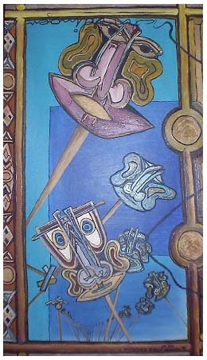

Sammlung G.Schmalz. Schrodingers Katze. 1996
В известном мысленном эксперименте Шрёдингера, поясняющем принципы квантовой неопределенности на домашних животных, в закрытом ящике сидит некто Katze (еще одна неопределенность: то ли кот, то ли кошка), жизнь которой находится в зависимости от того, как поведет себя помещенная в тот же ящик частица, а сама эта частица находится в состоянии суперпозиции - она одновременно и корпускула, и волна. Стоит наблюдателю открыть ящик, суперпозиция разрушается, частица переходит в одно из своих состояний, и судьба кошки решается. На этом примере Шрёдингер популярно показал, как частица может одновременно находиться в двух состояниях, логически взаимоисключающих друг друга, и что из этого получается в нашей дихотомической реальности, не допускающей неопределенности (кошка либо жива, либо мертва, третьего не дано).
Очевидно, подобный пример понадобился Шрёдингеру, чтобы попытаться преодолеть непонимание и даже недоумение, вызываемое в умах дилетантов неопределенностью квантовой механики. За 70 лет своего гипотетического существования "кошка Шредингера", казалось бы, выполнила свою миссию: не одно поколение школьников и студентов познакомилось с этим полуживым квантовым животным, наглядно разъясняющим "копенгагенскую интерпретацию Бора", согласно которой результат наблюдения зависит от Наблюдателя. Однако, как отмечают современные физики, занимающиеся квантовыми проблемами, пример Шрёдингера дает не понимание квантовой механики, а лишь иллюзию понимания, поскольку справляется лишь с одной-единственной задачей, а именно переводит проблему из туманной области квантовых неопределенностей микро-мира в привычно-ясную плоскость детерминизма окружающей человека реальности, зримой и ощутимой.
За фасадом сложностей логического осмысления квантовых процессов стоит другая проблема, связанная скорее не с восприятием описания их неопределенности, а с их основой: явления, наблюдаемые на уровне элементарных частиц, не поднимаются из глубин микромира на поверхность нашей обыденной реальности, в которой все события происходят в соответствии с классической, Ньютоновской, механикой, а не с квантовой. Атом может одновременно занимать несколько пространственных позиций или находиться в нескольких взаимоисключающих состояниях, но предметы макромира имеют определенную форму и подчиняются строгому правилу "всему свое место". И при всем при этом предметы состоят из атомов!
Один из основных вопросов квантовой механики - проблема разрушения суперпозиции, то есть перехода атомов из состояния неопределенности в детерминированное состояние. Но имеет ли этот переход физическую основу или совершается в представлении Наблюдателя? Во времена Шрёдингера (первая половина 20 века) еще существовала надежда на то, что понятие квантовой неопределенности - чисто теоретическое, а сама "неопределенность" происходит из недостаточного знания человека о реальных квантовых процессах (так называемое "неполное знание"). При отсутствии возможностей проверить квантовые постулаты эмпирическим путем понятие "Наблюдатель" также представлялось достаточно искусственным, и сентенция о разрушении суперпозиции под воздействием Наблюдателя носила скорее комплементарный характер, то есть использовалась главным образом для объяснения квантовых парадоксов, которые волновали мэтров лишь в силу того, что им приходилось объяснять свои теории "на пальцах" студентам, инвесторам и широкой публике. В конце 20 века благодаря развитию техники появилась возможность целенаправленно поддерживать когерентность атомов в вакууме и наблюдать их декогеренцию (разрушение суперпозиции под воздействием окружения). Таким образом, принцип квантовой неопределенности подтвердился на практике, и гипотетический Наблюдатель материализовался во внешней среде. Вместе с тем, встает вопрос: можем ли мы говорить о своей позиции Квантового Наблюдателя как об абсолютной точке отсчета?
Проведем мысленный эксперимент в духе отцов-основателей квантовой физики: представьте себя в роли кошки Шрёдингера, которая сидит в тесном ящике, и в этот ящик время от времени заглядывает Наблюдатель. Каким видит кошка Шрёдингера своего Наблюдателя? Во-первых нужно отметить, что Абстрактный Наблюдатель - это ни мужчина, ни женщина, ни ученый, ни дилетант, ни подросток, ни старик, ни пятое и не десятое. Это "просто Наблюдатель", который может быть и мужчиной, и женщиной, и ученым, и дилетантом, и подростком, и стариком, и пятым, и десятым. Во-вторых, приходится признать, что Абстрактного Наблюдателя в природе не существует, а существует некое множество конкретных наблюдателей, которые могут оказаться либо мужчиной, либо женщиной, либо ученым, либо дилетантом, либо подростком, либо стариком, либо пятым, либо десятым. Каким этот Наблюдатель окажется в реальности, мы не знаем, но можем рассчитать определенную степень вероятности для мужчины, женщины, ученого, дилетанта, подростка, старика, пятого и десятого.
В итоге получается, что кошка Шрёдингера не может знать, что представляет из себя Наблюдатель, пока он не откроет крышку ящика, но может с определенной степенью вероятности предсказать, кем он окажется (если, конечно, допустить наличие у кошки математических способностей). Дотошные скептики могут возразить, что полной симметрии в перестановке мест наблюдателей не получается, потому что кошка в примере Шрёдингера либо жива, либо мертва, а мертвый Наблюдатель просто не способен открыть ящик. Но, если вдуматься, для мертвой кошки Наблюдателя как бы и не существует в силу того, что она его не воспринимает, и с учетом этого в расчете вероятности того, каким окажется Конкретный Наблюдатель, придется учесть, что с 50-процентной определенностью Налюдатель представляет собой НИЧТО.
Итак, дорогие котята, представьте себе, что вы сидите в закрытом ящике, над крышкой которого стоит Шрёдингер, который одновременно и жив, и мертв. Постойте, погодите возмущенно мяукать, я понимаю, что это абсурд, но мы с вами рассматриваем принципы человеческой реальности, в которой не действует кошачья логика. К тому же, как это ни странно, существует множество фактов, говорящих как в пользу того, что Шрёдингер мертв, так и в пользу того, что он жив. С одной стороны, некоторые ученые коты утверждают, что собственными глазами видели его могилу, с другой стороны, ведь кто-то же открывает крышку ящика, и кто это может быть, как ни Шрёдингер, ведь, как вы знаете, все человечество состоит из так называемых "Шрёдингеров", которые могут одновременно существовать в различных местах, в разных формах и обличьях, и мы не знаем заранее, кем окажется следующий Шрёдингер, который откроет крышку ящика, в котором мы сидим, пока он не откроет ее!